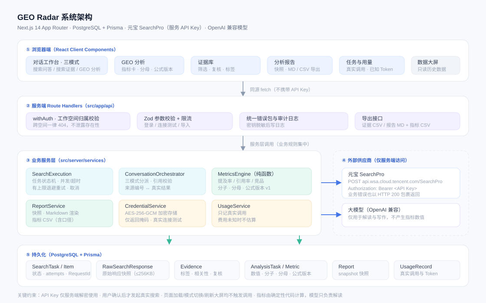
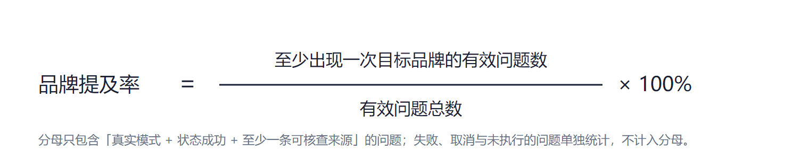
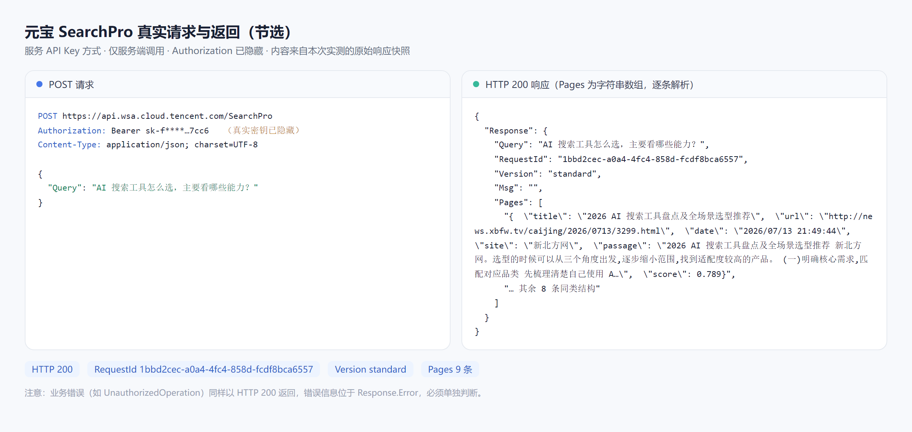
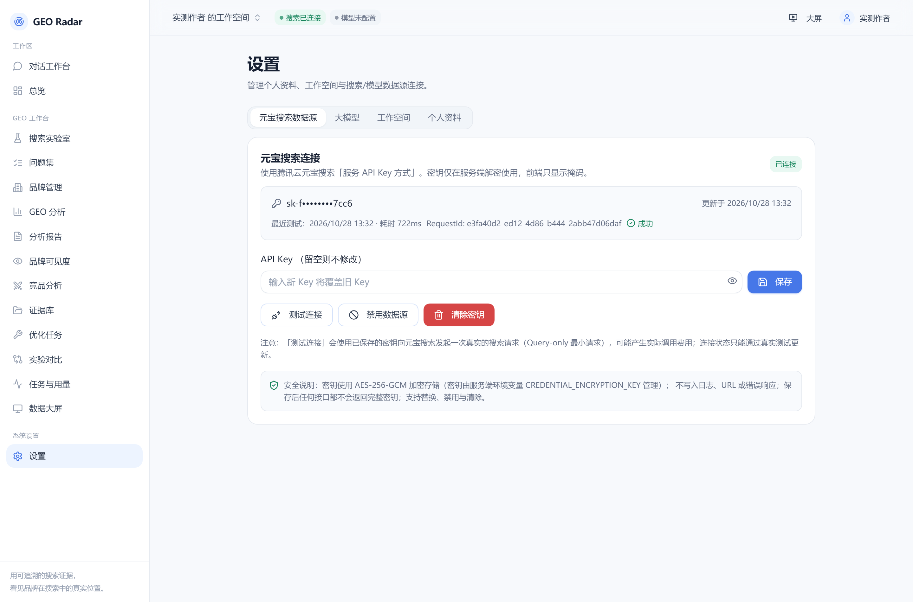
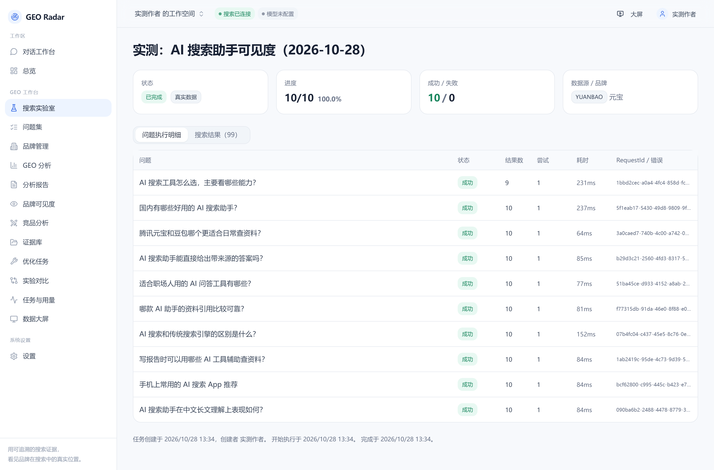
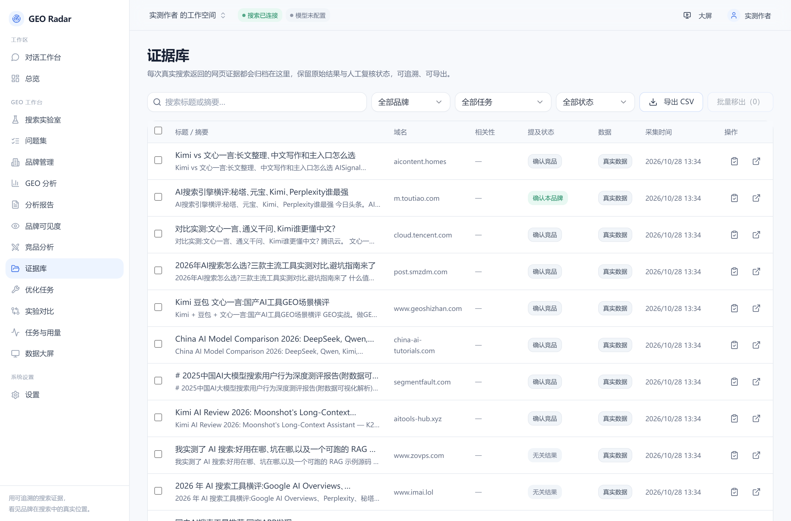
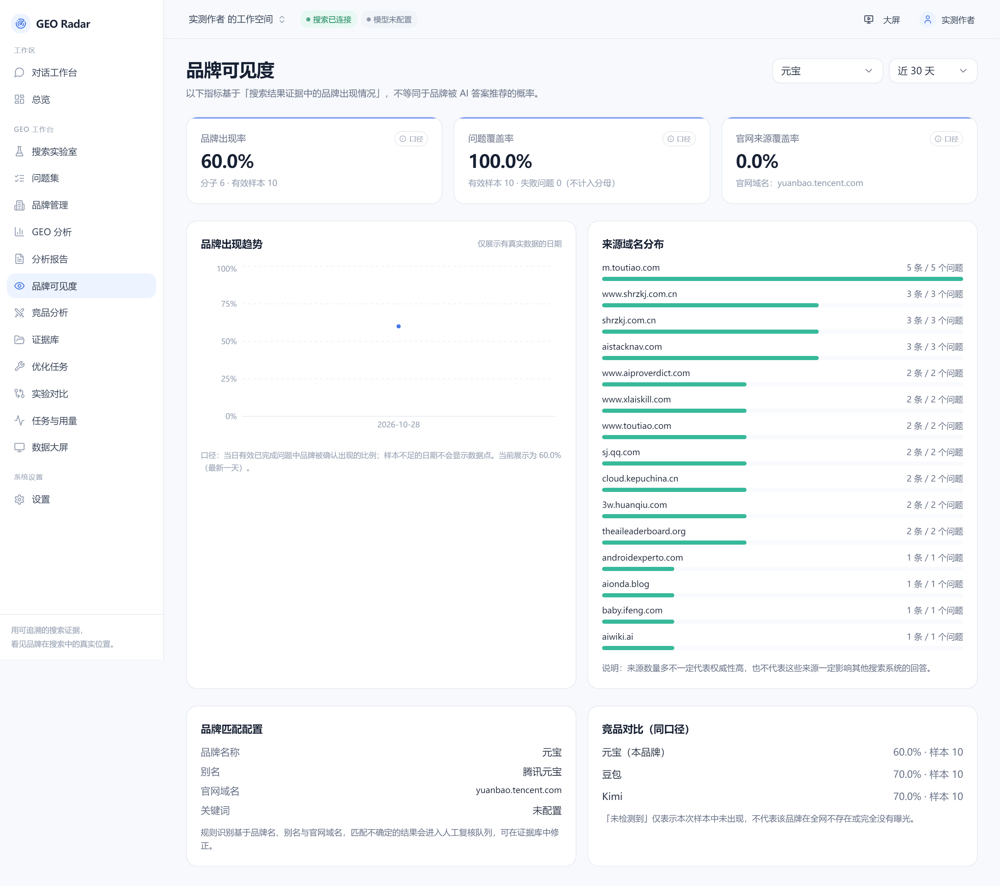
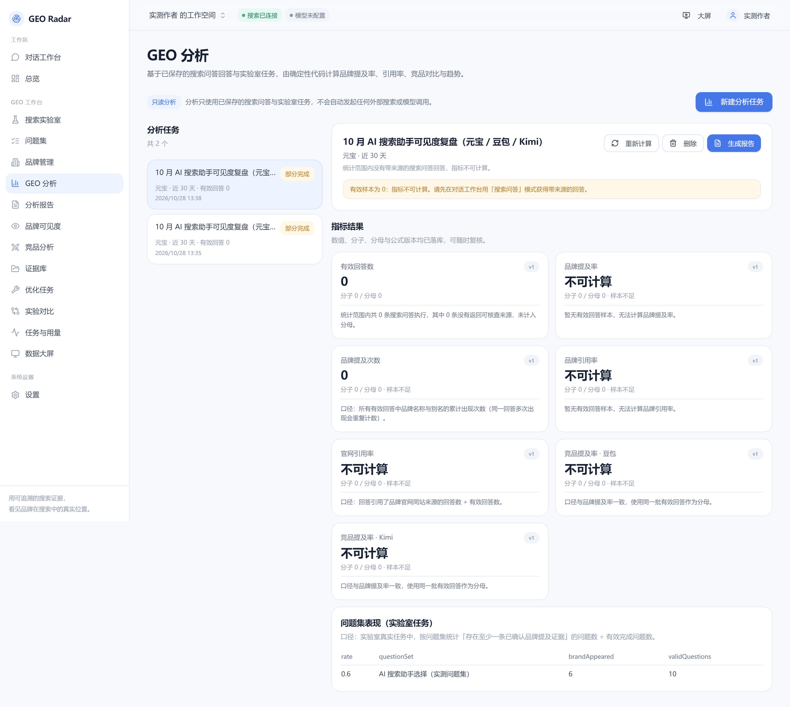
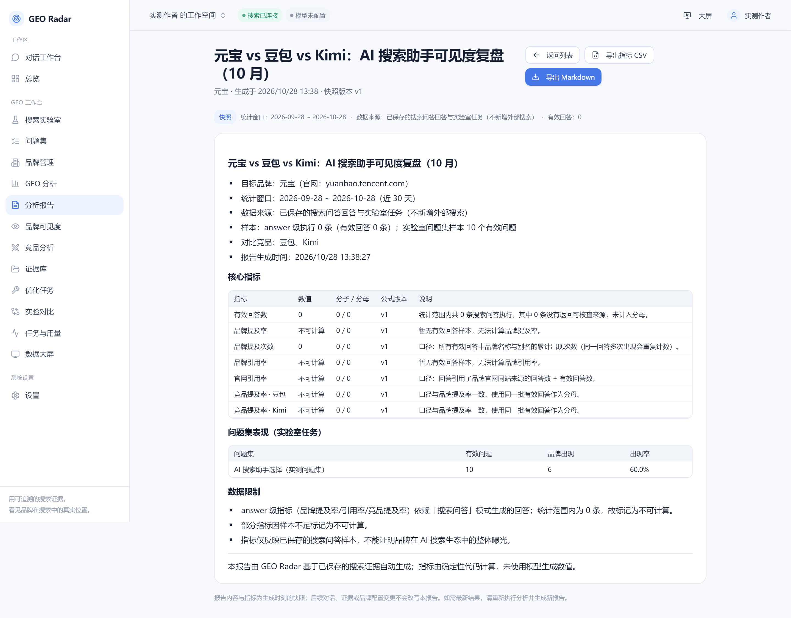

GEO Radar 文章配图总览
共 9 张，全部来自本机真实运行（真实元宝搜索 10 次调用、99 条结果）。点击任意图片可查看原始尺寸。
✓ 元宝 API 已真实调用
10 问题 / 99 条结果 / 82 域名
品牌出现率 60.0%（6/10）
豆包 70% · Kimi 70%

图 1｜系统架构assets/architecture.svg

图 2｜品牌提及率公式assets/brand-mention-rate.png

图 3｜真实请求与返回（RequestId 1bbd2cec…）assets/api-call.png

图 4｜数据源已连接（722ms / standard / 10 条）assets/shot-settings-connected.png

图 5｜搜索任务详情：10 个问题的状态 / 条数 / 耗时 / 尝试 / RequestIdassets/shot-task-detail.png

图 6｜证据库：99 条结果按采集时间归档assets/shot-evidence.png

图 7｜品牌可见度：60% / 100% / 0% + 来源域名分布 + 竞品对比assets/shot-visibility.png

图 8｜GEO 分析：指标含分子 / 分母 / 公式版本，无样本显示「不可计算」assets/shot-analysis.png

图 9｜分析报告：快照式指标表 + 数据限制，可导出 MD / CSVassets/shot-report.png
还需你本人补拍：腾讯云控制台的 4 张操作截图（注册登录、元宝搜索概览、版本与开通、创建 API Key）。
这些页面需要你的账号会话，我无法代拍；截图时请裁掉账号 ID、订单号与 API Key 明文。